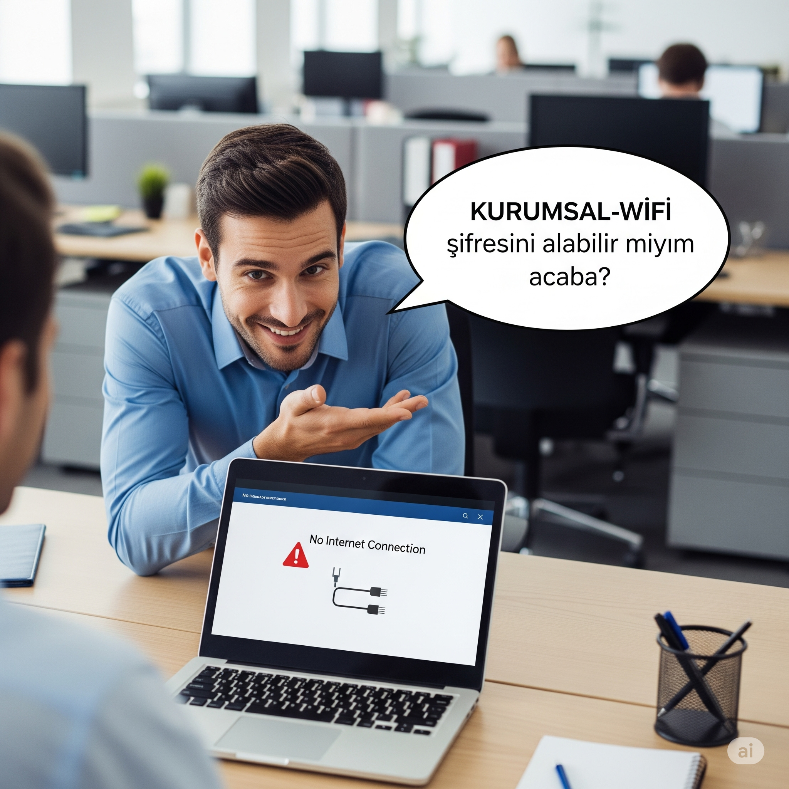

In this simulation, you will experience a multi-layered social engineering
attack aimed at exploiting your trust and good intentions in an office environment. The decisions you
make will directly affect not only digital but also physical security.
Key Metrics
Physical SecuritySecurity of company facilities and areas.
Information SecurityConfidentiality of sensitive data (passwords,
projects, etc.).
Procedure ComplianceYour level of adherence to company security
policies.
Corporate AwarenessYour contribution to the overall security
culture.
Physical Security
100
Information Security
100
Procedure Compliance
100
Corporate Awareness
100
Time Remaining
12:00
Simulation Completed: Evaluation Report
You have successfully completed the simulation. Below is the analysis of the decisions you made against
social engineering attacks.
Decision Timeline
Lessons Learned
Score Breakdown
Stage 1: The "Helpfulness" Trap (Tailgating)
You arrive at work in the morning and are about to pass through the turnstile with your staff card.
Just then, a well-dressed and rushing stranger, hands full with coffee and a laptop bag, calls out
from behind you: "Excuse me, I just started and forgot my card at my desk. Could you let me through
too?"
What do you do in this situation?
Stage 2: Curious Ears (Eavesdropping)
A bit later, while getting coffee in the break area, you see the same stranger talking on the phone
near a whiteboard where a group of engineers are discussing the technical details of a new project.
Although the stranger seems to be on the phone, their eyes and body are turned towards the
engineers, and they seem to be listening carefully to the conversation, which arouses your
suspicion.
What do you do when you notice this suspicious situation?
Stage 3: Wi-Fi Password Request
The stranger comes to your desk and asks with a smile, "Hello, I'm Can from the marketing department.
My system access isn't complete yet, but I need to download an urgent presentation. Could I get the
password for the company's 'CORPORATE-WIFI' network?"

How do you respond to this request?
Stage 4: Unattended Laptop
Passing by an empty meeting room, you see the same stranger's laptop sitting on the table, open,
unlocked, and unattended. Even worse, a cable is connected from the computer to the network
(ethernet) port on the wall.
What do you do in the face of this serious security breach?
Stage 5: The "I'm a Technician" Lie
A little later, you see the security guard asking the stranger who they are. The stranger replies
very calmly, "Don't worry, I'm from XYZ IT, the external service provider. We have a scheduled
network audit for today. Here is my work order," showing a paper in their hand.
What do you think when you witness this scene?
Stage 6: "Can I Print Something?"
The stranger comes to you again and asks, "Sorry to bother you again, I urgently need to print the
network audit report but I can't see the printers on the network. Can we quickly print this
single-page report from your computer using this USB?" and extends the USB drive in their hand.
What is your answer to this last and innocent-looking request?
Stage 7: The Stranger's Departure
At the end of the day, you see the stranger packing up their laptop bag, waving to the receptionist,
and leaving the building. Throughout the day, they managed to stay inside, listen to sensitive
conversations, and perhaps infiltrate the network. All of this happened right in front of your eyes.
How does this final scene make you feel?
Stage 8: The Truth Revealed
The next morning, an email comes to the whole company from the Information Security Directorate:
"Valued Employees, a 'Physical Penetration and Social Engineering Test' was carried out in our
company yesterday by an authorized cybersecurity firm. The 'stranger' you saw yesterday was a part
of this test. Our goal is to measure the effectiveness of our security procedures and see our
awareness level. This simulation is a reflection of the decisions you made that day."